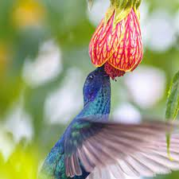
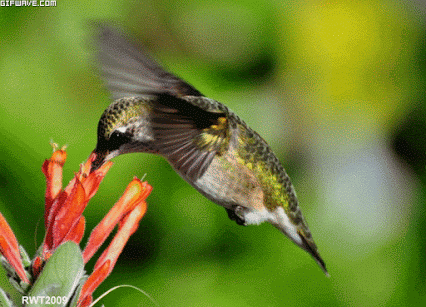
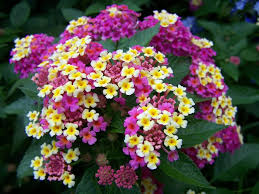

Si tienes un jardín en tu hogar o en algún lugar que frecuentas (y vives en América), probablemente has visto cómo los colibríes visitan las flores para alimentarse. Esto es porque son principalmente nectarívoros: seres vivos que consumen néctar para nutrirse."

El néctar es un compuesto presente en algunas plantas con flores, rico en azúcares como glucosa, fructosa y sacarosa y escaso de vitaminas, minerales, proteínas y otros nutrientes. El metabolismo de los colibríes es mayor que el de cualquier otro animal homeotermo o de sangre caliente. Su vuelo es enérgico y el batido de sus alas es sumamente rápido: hasta 200 veces por segundo. Su ritmo cardíaco se caracteriza también por su rapidez, y puede superar las 1,200 pulsaciones por minuto.
Si lo quieres ver de una manera, la vida de los colibríes es vertiginosa. Por eso requieren una gran cantidad de energía para cumplir con sus funciones vitales, tal como un atleta necesita más proteínas y otros nutrientes que una persona sedentaria. En la naturaleza, acuden a muchas especies de plantas, y prefieren las que producen flores vistosas, frecuentemente tubulares y de colores llamativos como el rojo, el anaranjado, el fucsia y tonos similares. Asimismo, si pueden escoger se alimentan del néctar que tiene un contenido de azúcar mayor del 10 por ciento, y evitan el menos azucarado.
La forma y tamaño del pico de una especie de colibrí está en concordancia con los tipos de flores que visita. Por ejemplo: mientras más largo es el pico, las fuentes de alimento pueden ser más largas o tubulares. Algunas especies de flores con néctar presentes en su alimentación son Campsis radicans, Fuchsia arborescens, Pedicularis densiflora, Fouquieria splendens, Lonicera sempervirens, Rhododendron arborescens, Aesculus pavia, Salvia splendens y Ribes malvaceum, entre otras.
Dado su comportamiento, los colibríes consumen en azúcares cada día más de la mitad de su peso corporal, y de 3.14 a 7.6 calorías, lo cual, para su pequeño cuerpo, representa mucho más de lo que un ser humano consume en relación con su propio cuerpo. Si el néctar es escaso, aprovechan los agujeros de los árboles realizados por otras aves y sorben la savia.Pero no todo componente de su dieta es dulce. Requiere otros nutrientes que obtiene gracias a la captura de algunos insectos, arácnidos y otros animales pequeños. Estos alimentos suelen ser: moscas de la fruta, mosquitos, avispas, escarabajos, avispas, hormigas y jejenes. Solo un 10 por ciento de su dieta total consiste en animales, pero la cantidad puede aumentar durante la temporada de cría.
Como ya se mencionó, el pico es una estructura completamente adaptada a su alimentación. Algunas especies, como las del género Chalcostigma, tienen un pico corto que les impide alimentarse de flores de largas corolas, pero sí pueden hacerlo en flores cortas e incluso son capaces de picar la base de una flor para llegar al líquido. Anteriormente se creía que la recolección se producía debido a la acción capilar, pero se ha descubierto que no es así. La lengua de todas las especies es bifurcada, y gracias a movimientos de ella el néctar es recogido.Son capaces de digerir pequeños insectos en un tiempo de 10 minutos.

Son muy rápidos al comer. Algunos visitan 20 flores por minuto. La digestión tampoco es lenta, pues son capaces de digerir pequeños insectos en un tiempo de 10 minutos, y por lo regular, su comida es retenida en su organismo durante cerca o menos de 1 hora. Durante el día gastan un 10-15 por ciento de su tiempo en actividades de alimentación y un 70 a 85 por ciento en la digestión, en tanto durante la noche entran en un estado de baja actividad parecido a la hibernación, en el cual disminuyen su temperatura corporal y su frecuencia cardíaca. Algunos manifiestan una marcada preferencia por determinadas flores, y pueden defender un territorio de forma agresiva.